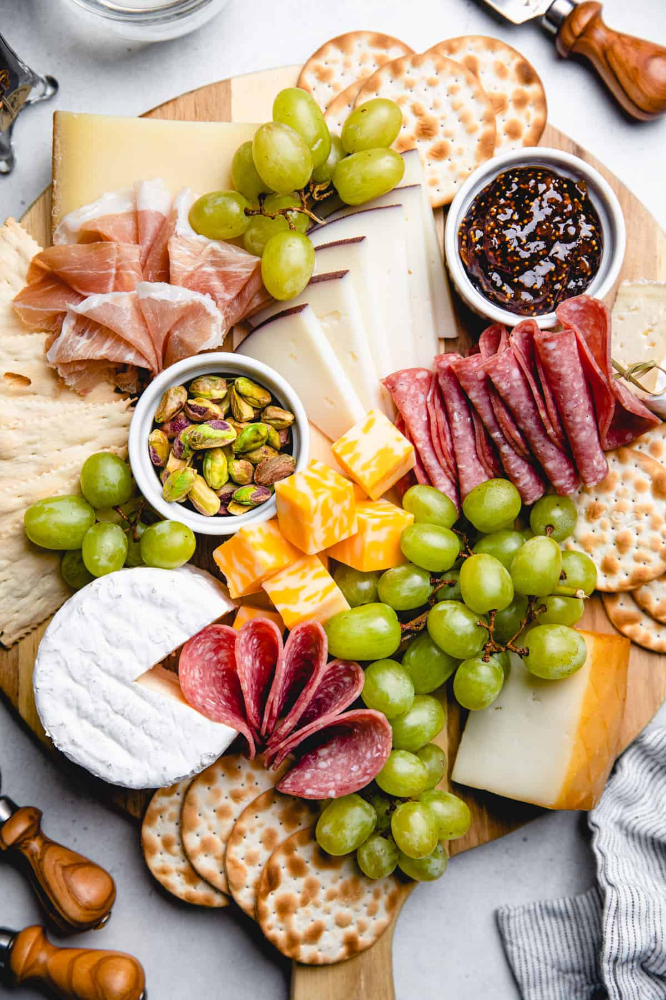

Charcuterie board
What fancy picnic would be complete without one?
Ingredients
- Assorted cheeses, for instance brie, chevre, manchego, grana padano, and roquefort
- Assorted cured meats, for instance salami, prosciutto, and a terrine or pâté
- Olives
- Fruit spread like membrillo or fig jam
- Grapes, strawberries, or other fresh fruit
- Salted or spiced nuts
- Baguettes and crackers to serve
Instructions
- Bring a large cutting board or platter with you, along with cheese knives and a few smaller dishes and spoons, and all your ingredients.
- Once you get to your picnic spot, set it up! Place your cheeses on the board, and nestle folded slices of cured meat and fresh fruit between them along with bowls of fig jam, olives, and salted nuts.
- Dig in! But in a fancy way.